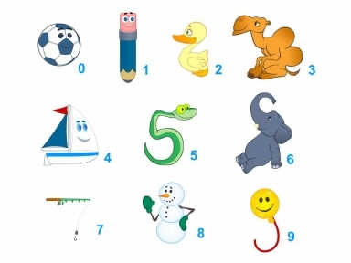

“The existence of forgetting has never been proved: We only know that some things don't come to mind when we want them.”
~ Friedrich Nietzsche
Have you ever had this experience, you smell something and instantly your memory takes you back to another time? The smell is a link to the experience. Or, you hear a song and a whole stream of memories are released from your mind?
We can consciously take control of this reminder principle to create another system for our memory skills toolbox. This is the first system that I ever learned, and it introduced me to my memory potential. It worked so well that it seemed like a trick and ever since that day I have been hooked on the power of my memory. I hope it has a similar effect for you. It is called, The Peg Method of memory.
We are going to explore the power of your associative mind. We are going to learn two new peg methods of memory. The first is called The Rhyming Peg Method and the other The Shape Peg Method. These secrets were brought to our conscious awareness by John Sambrook and Henry Heardson in the late 1700s.
These methods are very simple and effective. It will provide you with a method that can help you remember 40 or more bits of information in a short space of time. You can even remember the information in random order and by number.
Let me explain the first method, the rhyming pegs. The pegs act in much the same way as clothes pegs. They keep information hanging around in your mind. The pegs themselves must become part of your long-term memory for them to work. Remember you always need your long-term memory to assist your short-term memory. With this method you associate new information to long-term memory pegs in your mind. The pegs also act as compartments or files for your new thoughts. The method is simple; it makes memory pegs out of rhyming words and we will use the following rhyming words as mental files:
One rhymes with the word Bun
Two– Shoe
Three– Tree
Four– Door
Five– Hive
Six– Sticks
Seven– Heaven
Eight– Gate
Nine– Vine
Ten– Hen
Now, each one of these pegs can become compartments to store new information. You link the peg (using the SEE principle) to the words that you want to remember.
In Anthony Robbin’s life changing book, Awaken the Giant Within, he has a list of The Ten Emotions of Power. I want you to use this new system so that you can hold these emotions in your mind. Think about them daily, because personal development only happens when you can remember what you need to act on.
The Ten Emotions of Power are:
1. Love and warmth
2. Appreciation and gratitude
3. Curiosity
4. Excitement and passion
5. Determination
6. Flexibility
7. Confidence
8. Cheerfulness
9. Vitality
10. Contribution
Remember to make the images illogical. SEE the information in your mind for a few seconds. Take your time and make the associations strong; you can also draw an image to help you experience the information more.
One bun, imagine a heart (symbol for love) shaped warm bun, or imagine that thousands of warm hearts are flying out of a bun. Really visualize it and you will remember that one is love and warmth.
Two shoe, imagine that a preacher is grating a shoe with a cheese grater. I used a preacher to remind you of appreciation and a grater for gratitude.
Three tree, imagine a cat in the tree, don’t make it logical. Maybe, imagine that the branches look like cats, cats are hanging off the branches or cats are growing out of the tree. Curiosity killed the cat. So, three is curiosity.
Four door, imagine an excited person bashing down your door. Or, the door is so excited it jumps up and down and opens and closes. You squeeze passion fruit on the excited door. Four is excitement and passion.
Five hive, imagine determined bees or determined terminators trying to break open a bee hive. Bees are a determined nation. Determination is five.
Six sticks, imagine hitting a flexible person, that is doing the splits, with a stick. Or, really feel how flexible the stick can be. Six is Flexibility.
Seven heaven, imagine heaven is full of confident people. See them walking tall with confidence that they are in paradise. Seven is Confidence.
Eight gate, see a smiley faced shaped gate. You cheerfully open the cheerful gate. Eight is cheerfulness.
Nine vine, see vitamins growing on a vine. As you eat these vitamin grapes you feel your sense of vitality improve.
Ten hen, imagine a hen giving you presents. She is a contributing hen. Ten is contribution.
Now really see each link picture in your mind and make it clear. You should now know these emotions forwards, backwards, and in random order. Test yourself to see if you have them all.
Practise feeling these emotions because you become good at what you practise. Anthony Robbins says, “You are the source of all your emotions; you are the one who creates them. Plant these emotions daily, and watch your whole life grow with vitality that you’ve never dreamed of before.”
The rhyme method can be extended by finding more words that rhyme with the number, e.g.: one - bun, sun, tum, gum and gun. With this method you can easily create a peg system that you can use to store up to 30 bits of new information.
Pegging also has no limits; you can create other lists too. Here is the second short peg list that you can use, The Shape System. It converts numbers into concrete shapes. It works in the same way as the rhyme list, only this time the pegs are shaped like the number. We are not going to do an exercise with this system, because you have already learned the principle in the rhyme list.
Use this list on your own, to remember ten bits of new information, play with it and have a bit of fun. The shape method just gives you another option to use. Here is the list:

These peg lists create so many new possibilities; you can create all kinds of peg lists. You can use any list that is already in your long-term memory. You can make up words for each letter of the alphabet e.g. apple, bucket, cat, dolphin etc. Use any list that you already know well: your favorite football players, super heroes, pop stars or any list that you can remember in order. Enjoy using this method, and find new ways to improve it.